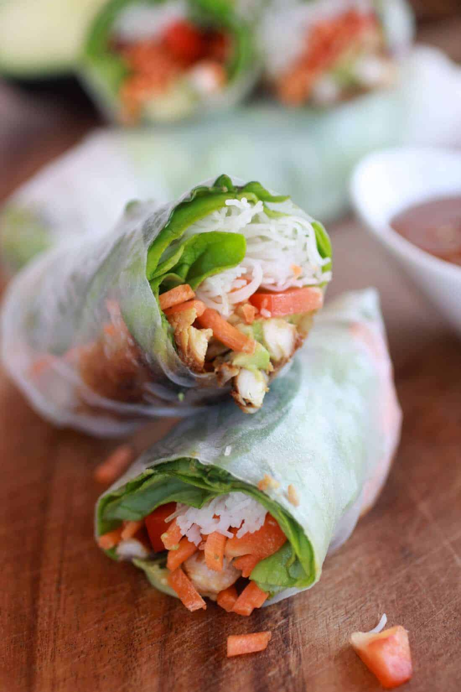

Springrolls

The best spring rolls in town
Ingredients List
- 1 large onion, julienned/li>
- 1 medium carrot, julienned
- 1/4 pound shiitake mushrooms, discard stems, julienned/li>
- 1 large red bell pepper, julienned
- 1 large yellow bell pepper, julienned/li>
- 1 small green cabbage, julienned/li>
- Peanut oil, for stir-frying
- Salt and pepper
-
1/4 pound glass noodles, soaked in water for 10 minutes, chopped into
smaller strands
- 1/4 cup mushroom soy sauce
- 2 tablespoons chili paste
- 1 tablespoon sesame oil
- 1 bunch cilantro leaves, chopped
- Cooked aromatic mixture, recipe follows
- Hot Chinese Mustard Sauce, recipe follows
Steps
-
Prepare the filling. In a wok, stir-fry each vegetable separately in
peanut oil. Season with salt and pepper. Drain and transfer to a mixing
bowl. Stir in noodles, mushroom soy sauce, chili paste, sesame oil, and
cilantro. Season with salt and pepper. Set aside to cool completely. When
cool, blend the filling mixture with the aromatic mixture. When ready to
form the spring rolls, squeeze out all the excess liquid.
-
Make the spring rolls. Place about 1/2 cup of prepared filling per spring
roll wrapper. Roll and seal edges with the egg wash. Repeat the process
until all filling is used.
-
In a deep pot, with about 4 cups peanut oil heated to 350 degrees F.,
deep-fry in batches of 4 until golden, about 2 to 3 minutes. Drain on
paper towels. Trim off the ends and slice diagonally. Drizzle top with Hot
Chinese Mustard Sauce. Serve immediately.
-
Prepare the aromatic mixture. In a food processor, combine the ginger,
garlic, green onions and red pepper flakes. Turn on machine, slowly add
oil and process mixture to a puree. Saute mixture for 1 to 2 minutes.
Season with salt, pepper and sugar. Set aside.
-
Prepare the Hot Chinese Mustard Sauce. In a bowl, combine all the
ingredients except the oil. Stir until well blended. Slowly whisk in the
peanut oil until emulsified. Refrigerate, covered until needed.
Return to main page